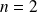
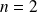
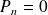
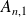

Sujet PSI 2015-25 : Matrice / corrigé complet
Le sujet est téléchargeable ci-dessous.
Le corrigé des questions mathématiques est de Cédric Faure, et les indices aussi ! Merci à lui.
Soit un entier
et
 un réel non nul. On considère la matrice carrée d'ordre
un réel non nul. On considère la matrice carrée d'ordre
 à coefficients réels :
à coefficients réels :
Question
1. Écrire une fonction qui étant donnés un entier
et un réel
non nul renvoie la matrice
.
import numpy as np
def A(n, a):
'''n entier, n >= 1, a non nul'''Res = np.zeros((n, n))
Res[0, 1] = 1 / a
for i in range(1, n - 1):
Res[i, i + 1] = 1 / a
Res[i, i - 1] = a
Res[n - 1, n - 2] = a
return(Res)
Question
2. Donner des valeurs approchées décimales des valeurs propres de
pour
et
dans
.
Utiliser le module numpy.linalg pour le calcul des valeurs propres. Voir la synthèse sur le calcul matriciel.
La = list(range(-2, 0)) + list(range(1, 4))
Ln = list(range(3, 9))
import numpy.linalg as alg
def Val_propres(Ln, La):
for n in Ln:
for a in La:
print('Valeurs propres pour n = ', n, ' et a = ', a, ' :\n', '\t', alg.eigvals(A(n, a)))
Voici le résultat affiché pour
= 3 et 4.
>>> Val_propres(Ln, La)
Valeurs propres pour n = 3 et a = -2 :
[ -1.41421356e+00 9.77950360e-17 1.41421356e+00]
Valeurs propres pour n = 3 et a = -1 :
[ -1.41421356e+00 9.77950360e-17 1.41421356e+00]
Valeurs propres pour n = 3 et a = 1 :
[ -1.41421356e+00 9.77950360e-17 1.41421356e+00]
Valeurs propres pour n = 3 et a = 2 :
[ -1.41421356e+00 9.77950360e-17 1.41421356e+00]
Valeurs propres pour n = 3 et a = 3 :
[ -1.41421356e+00 -1.66533454e-16 1.41421356e+00]
Valeurs propres pour n = 4 et a = -2 :
[-1.61803399 -0.61803399 1.61803399 0.61803399]
Valeurs propres pour n = 4 et a = -1 :
[-1.61803399 -0.61803399 1.61803399 0.61803399]
Valeurs propres pour n = 4 et a = 1 :
[-1.61803399 -0.61803399 1.61803399 0.61803399]
Valeurs propres pour n = 4 et a = 2 :
[-1.61803399 -0.61803399 1.61803399 0.61803399]
Valeurs propres pour n = 4 et a = 3 :
[-1.61803399 -0.61803399 1.61803399 0.61803399]
3. Soit la suite de polynômes définie par :
,
, et
 ,
.
,
.
Question
a. Calculer les coefficients de .
Utiliser la classe Polynomial du module numpy.polynomial pour manipuler les polynômes. Voir la synthèse sur les polynômes.
Il est à noter que la classe Polynomial affiche la liste des degrés croissants du polynôme, mais également deux listes supplémentaires, [-1, 1], les valeurs par défaut des paramètres domain et window. Ne pas en tenir compte.
from numpy.polynomial import Polynomial
def Pn(n):
'''n >= 1 et pas trop grand ! la complexite est geometrique'''P1 = Polynomial([0, 1])
if n == 1:
return( P1 )
if n == 2:
return( Polynomial([-1, 0, 1]) )
else :return( P1 * Pn(n - 1) + Pn(n - 2) )
Mais cette solution est rédhibitoire en terme de complexité. Pour les exemples de cet exercice, cela aurait pu être concevable. En voici une version itérative qui renvoie la liste de tous les polynômes intermédiaires calculés.
def LPn(n):
'''n >= 1, renvoie la liste des polynomes [P1, ..., Pn] la complexite est lineaire'''LP = [Polynomial([1]), Polynomial([0, 1])]
if n == 1:
return(LP)
LP.append( Polynomial([-1, 0, 1]) )
if n == 2:
return(LP)
for k in range(3, n + 1):
LP.append( LP[1] * LP[k - 1] - LP[k - 2] )
return(LP)
Voici les résultats affichés.
def Coeffs_P(C):
LPC = LPn(C[-1])
for c in C:
print('P', c, ' = ', LPC[c])
print('Racines de P', c, ' = ', LPC[c].roots())
>>> Coeffs_P(list(range(3, 9)))
P 3 = poly([ 0. -2. 0. 1.])
Racines de P 3 =
[-1.41421356 0. 1.41421356]
P 4 = poly([ 1. 0. -3. 0. 1.])
Racines de P 4 =
[-1.61803399 -0.61803399 0.61803399 1.61803399]
P 5 = poly([ 0. 3. 0. -4. 0. 1.])
Racines de P 5 =
[-1.73205081 -1. 0. 1. 1.73205081]
P 6 = poly([-1. 0. 6. 0. -5. 0. 1.])
Racines de P 6 =
[-1.80193774 -1.2469796 -0.44504187 0.44504187 1.2469796 1.80193774]
P 7 = poly([ 0. -4. 0. 10. 0. -6. 0. 1.])
Racines de P 7 =
[-1.84775907 -1.41421356 -0.76536686 0. 0.76536686 1.41421356
1.84775907]P 8 = poly([ 1. 0. -10. 0. 15. 0. -7. 0. 1.])
Racines de P 8 =
[-1.87938524 -1.53208889 -1. -0.34729636 0.34729636 1.
1.53208889 1.87938524]
 semble être le polynôme caractéristique de
. Les racines de
sont alors les valeurs propres de
.
semble être le polynôme caractéristique de
. Les racines de
sont alors les valeurs propres de
.
Question
b. Donner des valeurs approchées des racines de .
Question
c. Conjecturer un lien entre
et
 et le démontrer.
et le démontrer.
On note le polynôme caractéristique de . On conjecture .
On vérifie à la main cette relation pour
 et

.
et

.
On suppose cette relation aux rangs
et
. On calcule ensuite
par développement sur la première colonne :
Donc , d'où la conclusion par récurrence.
Question
4. Les matrices sont-elles inversibles ? diagonalisables ?
Par récurrence immédiate,

si
impair, et
si
pair.
est inversible ssi 0 n'est pas valeur propre ssi
ssi
est pair.
Pour le caractère diagonalisable, je ne vois pas de raisonnement plus simple que d'expliciter les valeurs propres, ce qui est demandé à la question suivante.
Question
5. Trouver un segment de
 contenant toutes les valeurs propres de
pour
entier et
réel dans
.
contenant toutes les valeurs propres de
pour
entier et
réel dans
.
Les valeurs propres de
sont indépendantes de
, on peut les étudier directement sur la matrice

.
On pose , , et .
(la condition
permet d'affirmer que cela reste le cas pour
 et
).
et
).
On cherche donc une suite récurrente d'ordre 2, qui s'annule en 0 et
sans être constante égale à 0. L'idée est de chercher
 tel qu'on ait des solutions trigonométriques, autrement dit que l'équation caractéristique admette des racines de module 1.
tel qu'on ait des solutions trigonométriques, autrement dit que l'équation caractéristique admette des racines de module 1.
Or, en posant
,
et pour tout
 ,
,
 . Alors
, et
, donc
est valeur propre de
.
. Alors
, et
, donc
est valeur propre de
.
Par variations du cosinus, on a obtenu
valeurs propres distinctes pour une matrice de taille
. On les a donc toutes, et elles sont toutes de multiplicité 1, donc
est diagonalisable, et ses valeurs propres appartiennent à
.
Le polynôme caractéristique de
ne dépend pas de
, donc ses valeurs propres non plus. La conclusion précédente se généralise à tout
.